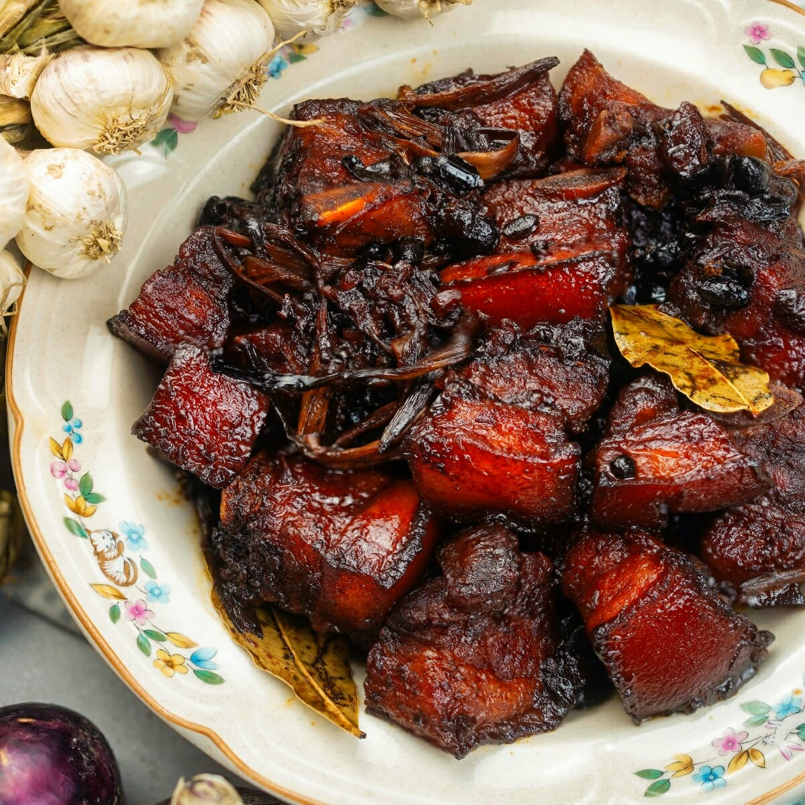

Back to Home
Pork Humba Recipe

Pork Humba is a Filipino braised pork dish that is rich in flavor and perfect for sharing with family and friends. It is made with pork belly, soy sauce, vinegar, brown sugar, garlic, bay leaves, and black peppercorns. The pork is slow-cooked until it becomes tender and infused with the delicious flavors of the sauce.
Ingredients:
- 1 kg pork belly, cut into chunks
- 1/2 cup soy sauce
- 1/4 cup vinegar
- 1/4 cup brown sugar
- 5 cloves garlic, minced
- 2 bay leaves
- 1 tsp black peppercorns
- 1 cup water
Instructions:
- In a large pot, combine the pork belly, soy sauce, vinegar, brown sugar, garlic, bay leaves, black peppercorns, and water.
- Bring the mixture to a boil over medium-high heat. Once it starts boiling, reduce the heat to low and let it simmer for about 1.5 to 2 hours, or until the pork is tender and the sauce has thickened.
- Stir occasionally to prevent sticking and ensure even cooking. If the sauce reduces too much, you can add a little more water as needed.
- Once the pork is tender and the sauce has thickened to your liking, remove from heat and let it cool slightly before serving.
- Serve hot with steamed rice and enjoy!